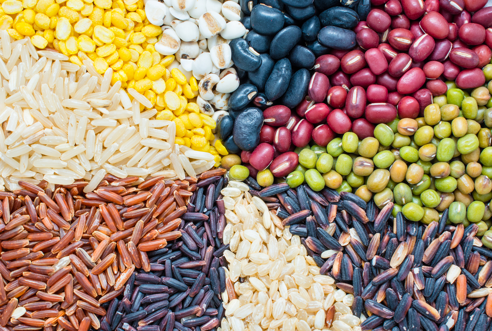

Food & Nutrition Advice

Eat a Variety of Foods
- Aim: A healthy diet includes a wide range of foods from all the major food groups.
- Why: No single food contains all the nutrients your body needs. Eating a diverse diet ensures you get a broad spectrum of vitamins, minerals, protein, fiber, and healthy fats.

Base Meals on Starchy Carbohydrates
- Focus: Make wholegrain starchy carbohydrates the foundation of your meals. This includes foods like potatoes, brown rice, whole-wheat bread, and pasta.
- Why: They are packed with essential vitamins, minerals, and dietary fiber, and a diet rich in fruits and vegetables is linked to a lower risk of obesity, heart disease, stroke, and certain cancers.
Eat Plenty of Fruits and Vegetables
- Goal: Aim to eat at least five portions of a variety of fruits and vegetables every day.
- Why: These foods provide a great source of energy and fiber, which helps you feel full for longer and supports a healthy digestive system.

Include Protein in Your Diet
- Sources: Incorporate sources of protein like beans, pulses, fish, eggs, and lean meats.
- Why: Protein is vital for the growth, repair, and maintenance of your body's cells and tissues. Fish, particularly oily fish like salmon and mackerel, are also rich in omega-3 fatty acids, which are beneficial for heart health.

Reduce Salt, Sugar, and Saturated Fat Intake
- Salt: Limit your daily salt intake to less than 5 grams (about one teaspoon) to help prevent high blood pressure and reduce the risk of heart disease.
- Suger: Cut back on foods and drinks high in added sugars, such as soft drinks, candy, and sugary cereals.
- Why: Excessive consumption of salt, sugar, and unhealthy fats can lead to health problems like obesity, type 2 diabetes, and cardiovascular disease.